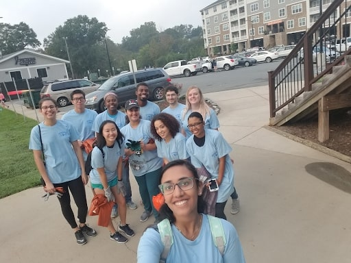
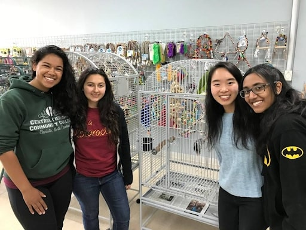
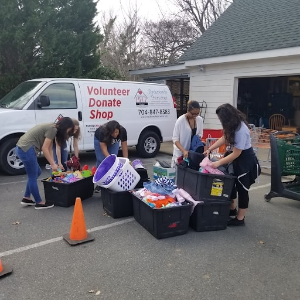
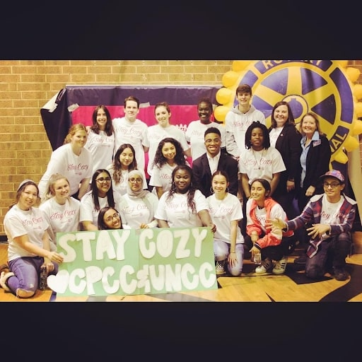

CPCC Rotaract
Central Piedmont Community College (CPCC) Rotaract
CPCC’s Rotaractors at the Rotary River clean up.




About CPCC's Rotaract
CPCC has 3 different Rotaract clubs at the different campuses, Central campus, Levine campus and Harris campus. Each club at the various campuses have different service events as well as coming together and doing service projects together.
Past Service Projects
- Catawba Riversweep Foundation
- CPCC's Rotaractors helped clear the river at the Riversweep. They also got Kayak on the river and collected a lot of trash. To learn more about volunteering with Catawba Riversweep Foundation click here
- Parrot University
- At Parrot University our Rotaractors cleaned cages as well as the classroom and helped fort out the shelves. The university supplies everything you need to have a healthy, happy and well=balanced parrot companion. To learn more about volunteering at Parrot University click here
- Matthews Help Centre
- Our Rotaractors at Matthews Help Centre, sorted out donation, cleaned and tidied up the store. The Matthews Help Centre provides help to those in need. They have financial crisis assistance which helps to meet life's basic needs, they also have a food pantry that provides one weeks worth of food to a family. To learn more about volunteering at Matthews Help Centre click here
- Partnered Coat Drive with UNCC
- Our Rotaract Clubs partnered with the Rotaract club at UNCC and donated coats to children in need. The clubs also provided games and pizza for the kids. To learn more about volunteering with Operation Warm click here